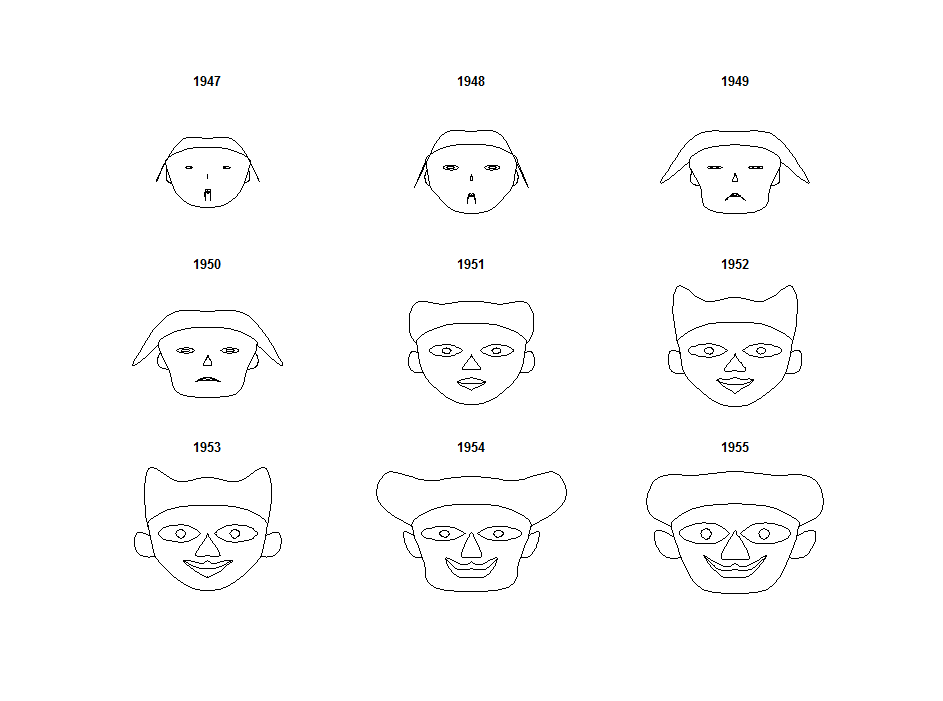
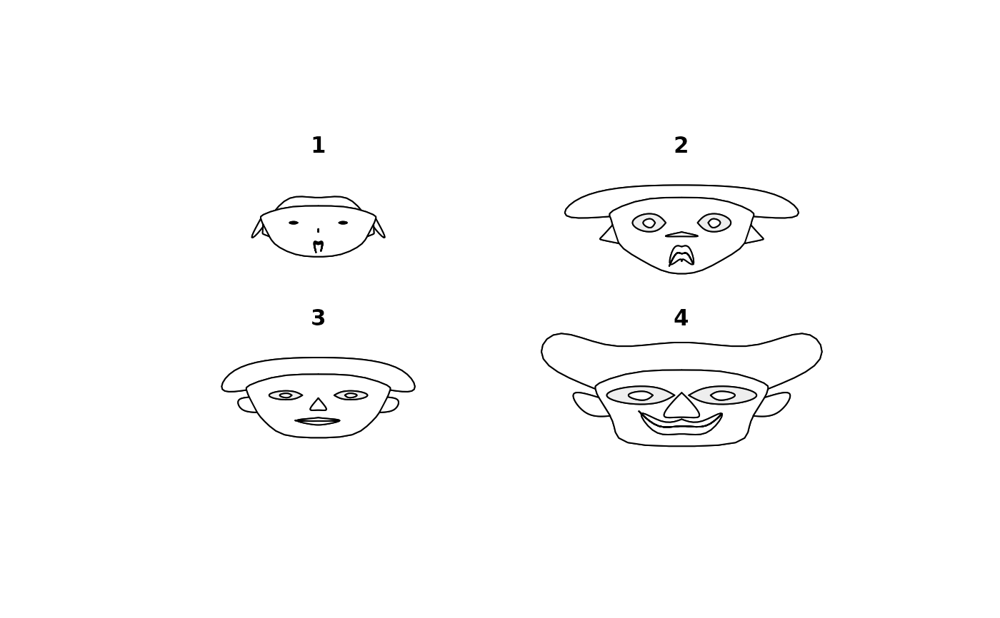
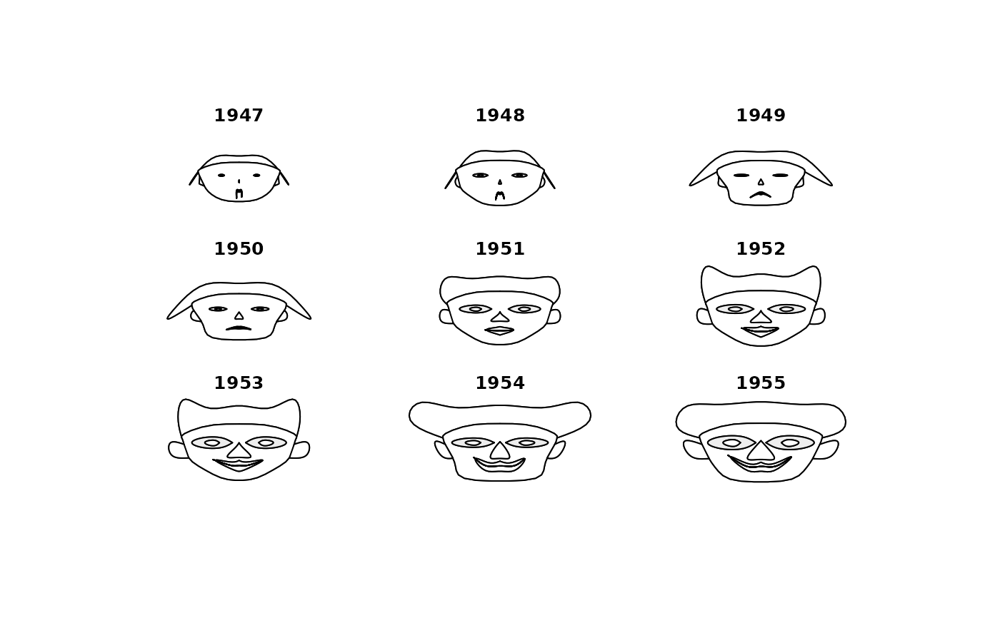
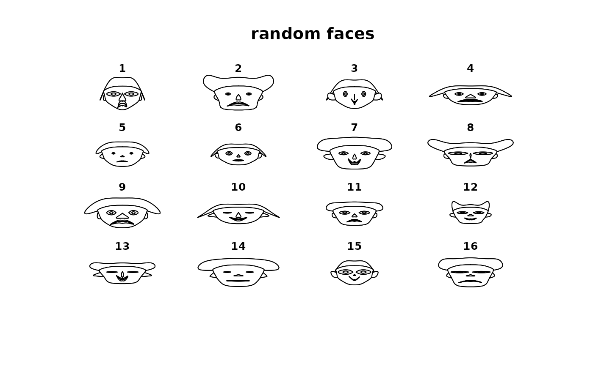
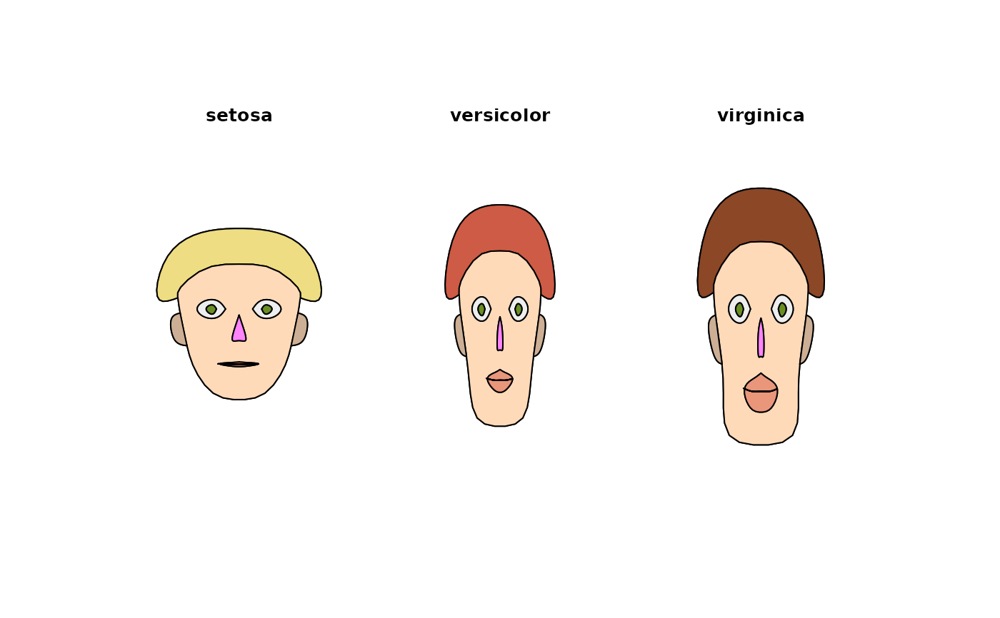

PlotFaces.RdPlot Chernoff faces. The rows of a data matrix represent cases and the columns the variables.
PlotFaces(xy, which.row, fill = FALSE, nr, nc, scale = TRUE, byrow = FALSE, main, labels, col = "white")
| xy |
|
|---|---|
| which.row | defines a permutation of the rows of the input matrix. |
| fill | logic. If set to |
| nr | number of columns of faces on graphics device |
| nc | number of rows of faces |
| scale | logic. If set to |
| byrow |
|
| main | title. |
| labels | character strings to use as names for the faces. |
| col | a vector of colors used for the parts of the faces. Colors are recycled in the order: "nose", "eyes", "hair", "face", "lips", "ears". Default is NA, which will omit colors. |
The features paramters of this implementation are:
1 height of face
2 width of face
3 shape of face
4 height of mouth
5 width of mouth
6 curve of smile
7 height of eyes
8 width of eyes
9 height of hair
10 width of hair
11 styling of hair
12 height of nose
13 width of nose
14 width of ears
15 height of ears

For details look at the literate program of faces
information about usage of variables for face elements is returned invisibly
Chernoff, H. (1973) The use of faces to represent statistiscal assoziation,
JASA, 68, pp 361--368.
The smooth curves are computed by an algorithm found in:
Ralston, A. and Rabinowitz, P. (1985)
A first course in numerical analysis, McGraw-Hill, pp 76ff.
H. P. Wolf, some changes Andri Signorell <andri@signorell.net>
based on version 12/2009
means <- lapply(iris[,-5], tapply, iris$Species, mean) m <- t(do.call(rbind, means)) m <- cbind(m, matrix(rep(1, 11*3), nrow=3)) # define the colors, first for all faces the same col <- replicate(3, c("orchid1", "olivedrab", "goldenrod4", "peachpuff", "darksalmon", "peachpuff3")) rownames(col) <- c("nose","eyes","hair","face","lips","ears") # change haircolor individually for each face col[3, ] <- c("lightgoldenrod", "coral3", "sienna4") z <- PlotFaces(m, nr=1, nc=3, col=col)#> modified.item variable #> 1 height of face Sepal.Length #> 2 width of face Sepal.Width #> 3 structure of face Petal.Length #> 4 height of mouth Petal.Width #> 5 width of mouth #> 6 smiling #> 7 height of eyes #> 8 width of eyes #> 9 height of hair #> 10 width of hair #> 11 style of hair #> 12 height of nose #> 13 width of nose #> 14 width of ear #> 15 height of ear